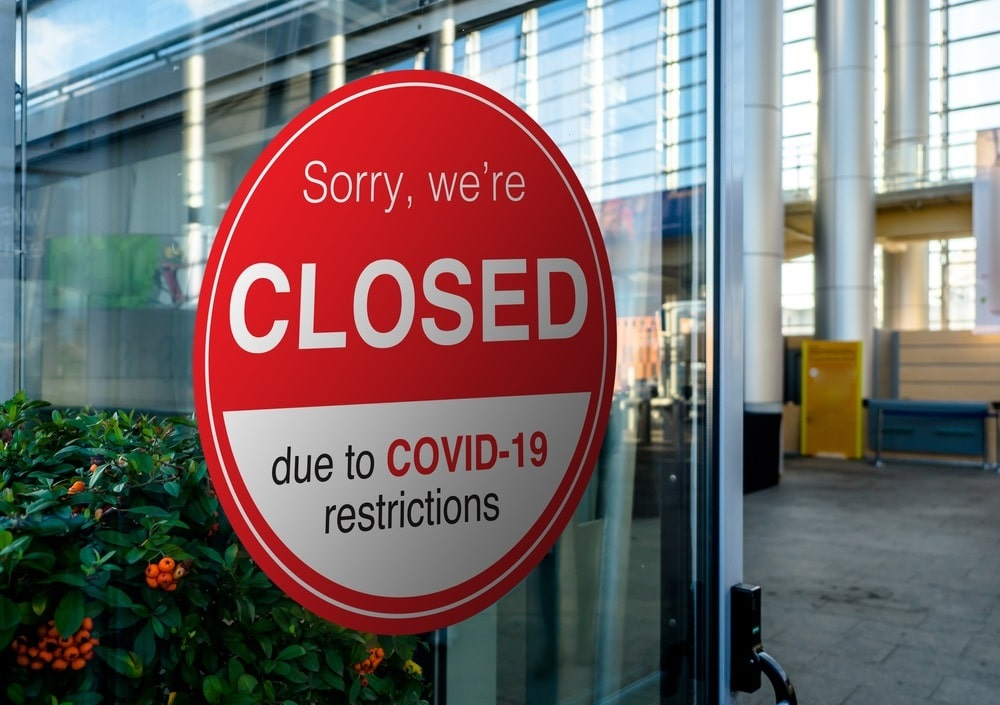
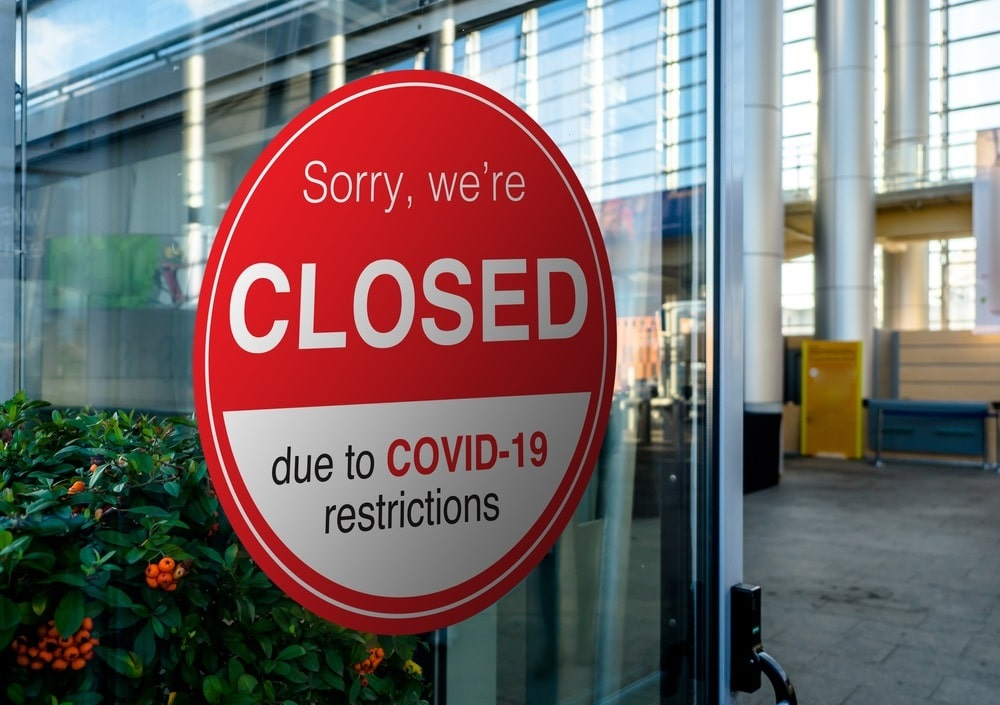

1 In 7 People Worldwide Go Hungry Every Day
World Hunger is one of the biggest challenges humanity is currently facing. Over 800 million people go hungry every day. The shortage of food and the rise of inflation are only two big reasons why food banks need as many donations as possible. For the third year in a row, the number of hungry people is on the rise, and this problem will only get worse until people realize why this problem is so big and how they can help.
Why People Cannot Obtain Food
There are many causes to limiting the availability of food. One of the main ones has been the heavy increase in poverty. If someone is in poverty, they might be struggling to have enough money to purchase food. If this is the case, they have no way of getting ahold of any sort of food item. Another big cause in World Hunger has been the pandemic. The Covid-19 pandemic has caused a lot of busineses to shut down, some of these being food banks, or care shelters. Some of these places even shut down perminently, putting people in trouble.
 
